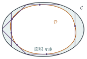

STEP III 2011，第 5 题
继续之前，请先阅读题目（原题为英文）。题目载于 STEP Support Programme 的题目资料库： step.maths.org/questions/11-s3-q5
引子
随便取一个卵形，甚么形状都可以，只要它是凸（convex）的，然后让一根长度固定的杆在里面滑动一圈，两端始终留在曲线上。在杆上涂一个点，把杆分成长度为 \(a\) 和 \(b\) 的两段。杆绕行一周时，这个点会描出一个较小的卵形。两条曲线之间的环形区域，面积是多少？
答案令人惊讶：无论原来的曲线是甚么形状，面积都是 \(\pi ab\)。又长又窄的卵形、蛋形、圆角三角形：环形的面积永远相同，只取决于那个点在杆上的位置。这个结果由剑桥大学冈维尔与凯斯学院（Gonville and Caius College, Cambridge）的院士 Hamnet Holditch 牧师于 1858 年发现，是初等几何中最出人意表的定理之一。本题只用一条面积公式就把它证明出来。
动笔之前
先在最简单的情况下检验这个定理。若 \(\mathcal{C}\) 是半径为 \(R\) 的圆，\(P\) 描出的是甚么曲线？环形的面积是多少？
由对称性可知，\(P\) 描出一个同心的圆，设其半径为 \(r\)。杆 \(AB\) 是大圆上一条通过 \(P\) 的弦，而相交弦定理（intersecting chords theorem，又称“圆幂”（power of a point））指出，对任何通过 \(P\) 的弦，都有 \(PA \times PB = R^2 - r^2\)。所以 \(ab = R^2 - r^2\)，环形的面积是 \(\pi R^2 - \pi r^2 = \pi ab\)。定理说的是：这个结论对每一条凸曲线都成立，不限于圆。
逐步解题
阶段 1 由坐标求面积
设 \(x = r\cos\theta\) 和 \(y = r\sin\theta\)，全部都是 \(t\) 的函数，计算 \(x\dot y - y\dot x\)，其中上方的点表示 \(\frac{\mathrm{d}}{\mathrm{d}t}\)。
\(\dot x = \dot r\cos\theta - r\sin\theta\,\dot\theta\)，而 \(\dot y = \dot r\sin\theta + r\cos\theta\,\dot\theta\)。于是 \[x\dot y - y\dot x = r\cos\theta\,(\dot r\sin\theta + r\cos\theta\,\dot\theta) - r\sin\theta\,(\dot r\cos\theta - r\sin\theta\,\dot\theta) = r^2\dot\theta.\] 所以 \(\frac12\int r^2\,\mathrm{d}\theta = \frac12\int r^2\dot\theta\,\mathrm{d}t = \frac12\int (x\dot y - y\dot x)\,\mathrm{d}t\)。■
这条公式不需要极坐标（polar coordinates），只需要把笛卡儿坐标（cartesian coordinates）下的位置写成某个参数（parameter）的函数。当一点沿着一条包围 \(O\) 的闭曲线逆时针绕行一周时，公式给出的就是曲线内的面积。
阶段 2 杆的两端
杆由 \(A\) 指向 \(B\) 的方向是 \((\cos t, \sin t)\)，而 \(P\) 与 \(A\) 的距离是 \(a\)，与 \(B\) 的距离是 \(b\)。所以 \[A = (x - a\cos t,\; y - a\sin t), \qquad B = (x + b\cos t,\; y + b\sin t).\]
阶段 3 \(OA\) 扫过的面积
把 \((*)\) 应用于 \(A\)。展开 \(x_A\dot y_A - y_A\dot x_A\)，并按 \(a\) 的幂次把各项整理好。
由 \(x_A = x - a\cos t\)、\(y_A = y - a\sin t\)，可得 \(\dot x_A = \dot x + a\sin t\) 和 \(\dot y_A = \dot y - a\cos t\)。展开得 \[\begin{aligned} x_A\dot y_A - y_A\dot x_A &= (x - a\cos t)(\dot y - a\cos t) - (y - a\sin t)(\dot x + a\sin t) \\ &= (x\dot y - y\dot x) + a^2(\cos^2 t + \sin^2 t) - a\bigl[(x + \dot y)\cos t + (y - \dot x)\sin t\bigr]. \end{aligned}\] 由 \(0\) 积分至 \(2\pi\) 再除以二：第一项给出 \([P]\)，第二项给出 \(\frac12 a^2 \cdot 2\pi = \pi a^2\)，第三项给出 \(-af\)。所以 \[[A] = [P] + \pi a^2 - af. \qed\]
现在求 \([B]\)。（提示：把 \(A\) 的公式中的 \(a\) 换成甚么，就得到 \(B\)？）
\(B = (x + b\cos t, y + b\sin t)\) 就是把 \(A\) 的公式中的 \(a\) 换成 \(-b\)。所以 \[[B] = [P] + \pi b^2 + bf.\]
阶段 4 消去 \(f\)
\(A\) 和 \(B\) 都沿同一条曲线 \(\mathcal{C}\) 绕行一周。由此可知 \([A]\) 和 \([B]\) 有甚么关系？
当 \(t\) 由 \(0\) 变到 \(2\pi\) 时，\(A\) 和 \(B\) 各自沿 \(\mathcal{C}\) 逆时针绕行一周，所以 \([A] = [B] = \text{面积}(\mathcal{C})\)。令两个表达式相等， \[\pi a^2 - af = \pi b^2 + bf \quad\Longrightarrow\quad f(a + b) = \pi(a^2 - b^2) \quad\Longrightarrow\quad f = \pi(a - b).\] 由于 \(P\) 沿 \(\mathcal{D}\) 绕行一周，\([P] = \text{面积}(\mathcal{D})\)，于是 \[\text{面积}(\mathcal{C}) - \text{面积}(\mathcal{D}) = [A] - [P] = \pi a^2 - a\pi(a - b) = \pi ab. \qed\] 那个取决于曲线形状的神秘量 \(f\)，自始至终没有计算过：它被消去了。
回顾
切合问题的公式。面积公式 \((*)\) 只需要把坐标写成参数的函数，而杆的运动正是这样描述的。
两个表达式，一个未知量。我们无法计算 \(f\)，但手上有两条含有它的方程，于是把它消去，就像解联立方程（simultaneous equations）一样。
先检验特殊情况。动笔之前，圆的情况已经给出答案 \(\pi ab\)，让我们知道目标是甚么。
背后的数学
公式 \((*)\) 是格林定理（Green’s theorem）的特殊情况；格林定理把沿闭曲线的积分与曲线内区域上的积分联系起来。它的面积形式指出，曲线所包围的面积是 \(\frac12\oint(x\,\mathrm{d}y - y\,\mathrm{d}x)\)，这个积分只需沿边界走一圈就能算出。工程师利用这一点造出了求积仪（planimeter），这是十九世纪发明的一种机械仪器（其中以 Jakob Amsler 在 1854 年的设计最为成功）：用指针沿着地图或图表上某个图形的边界描一圈，一个小轮就会记录所包围的面积。求积仪曾用来量度土地面积、根据示功图（indicator diagram）计算蒸汽机所作的功，还有许多其他用途，直至被数码方法取代为止。Holditch 定理与此密切相关：那根杆就像求积仪的臂。

细节条款
Holditch 陈述这个定理时，对条件不大讲究，但定理其实需要一些条件。杆必须能够在两端都留在曲线上的情况下绕足一整圈，而描出的曲线 \(\mathcal{D}\) 必须是只描一次的简单闭曲线（simple closed curve）；如果杆相对于 \(\mathcal{C}\) 的阔度太长，\(\mathcal{D}\) 可能会自相交，这时公式给出的“面积”会把某些区域计算两次，或以负号计算。题目假设 \(\mathcal{D}\) 是一条包含 \(O\) 的凸曲线，从而避开了这些困难。找出定理究竟在甚么条件下成立，正好说明一个优美的想法必须经过严格化才站得住脚，这也是第 3 章的主题。
思维技巧
如果某个量太复杂而无法计算，就找两条含有它的不同方程，把它消去。
这里 \(f\) 取决于曲线的每一个细节，但它同时出现在 \([A]\) 和 \([B]\) 的表达式中，而 \([A] = [B]\) 这个事实把它消除了。答案 \(\pi ab\) 之所以能够与曲线无关，全因取决于曲线的部分互相抵消了。
延伸练习
椭圆的面积。利用 \((*)\)，取 \(x = p\cos t\)、\(y = q\sin t\)，证明半轴为 \(p\) 和 \(q\) 的椭圆面积为 \(\pi pq\)。
圆的情况。证明相交弦定理：若圆的两条弦相交于 \(P\)，则每条弦被分成的两段，其长度之积相等。由此推导出圆的 Holditch 定理。
中点。证明由 \(f = \pi(a - b)\) 可知，当 \(P\) 是杆的中点时，\(f = 0\)。这时环形的面积是多少？答案以杆长 \(L\) 表示。
三角形。 较难 利用 \((*)\)，沿边界绕行一周，求顶点为 \((0, 0)\)、\((x_1, y_1)\)、\((x_2, y_2)\) 的三角形的面积，并证明它等于 \(\frac12|x_1y_2 - x_2y_1|\)。这就是求任意多边形面积的“鞋带公式”（shoelace formula）的起点。
延伸阅读
Mark Levi, The Mathematical Mechanic（Princeton University Press）。以杆、轮和弹簧等物理推理来证明数学结果，与本节的精神一脉相承。
H. M. Schey, Div, Grad, Curl, and All That（Norton）。向量微积分（vector calculus）的非正式入门，内容包括格林定理。
Hamnet Holditch, “Geometrical theorem”，Quarterly Journal of Pure and Applied Mathematics 2 (1858)。原始的短文，只有短短一段，完全没有提及任何细节条款。